Device R&D case
MID Labs — ophthalmic surgical devices
Primary R&D engineer and project manager on vitrectomy enhancement and related disposables for regulated ophthalmic surgery — spanning product concept, cutter systems, and cross-functional delivery with production, marketing, and RA/QA.
Context
MID Labs built accessories that plugged into existing vitreoretinal platforms. The existing AVE (Adaptable Vit Enhancer) was already in the field — useful context for what surgeons expected from an enhancer-class product. My work centered on the next generation of that line and on related disposable systems.
MVE — Millennium Vitrectomy Enhancer
I was the primary R&D engineer and project manager for the Millennium Vitrectomy Enhancer (MVE), developed for use with the Bausch + Lomb Millennium platform.
- Pneumatic power — a key differentiator versus the earlier AVE approach.
- Cut rates up to 2500 cuts per minute (cpm).
- Paired with dedicated vitreous cutters designed for the enhancer.
Role language here is engineering and program ownership — not a claim about clinical outcomes beyond what the product was designed and verified to do.
UVE — company follow-on
After MVE, the company developed UVE as a follow-on product inspired by that work. UVE targeted higher cut rates — up to 8000 cpm (industry-leading at the time) — with an emphasis on less vitreous disturbance / traction and a line of unique cutters matched to the system.
I include UVE here as lineage context: it shows how the MVE program informed the next product cycle.
Vitreous cutters — fail-safe pneumatics
The cutter architecture used a pneumatic power stroke with spring return. That arrangement is inherently fail-safe: if drive air is lost, the blade retracts rather than remaining extended.
That reliability detail mattered for both design reviews and how we talked about the disposable with production and quality partners.
CIS — Cannula Insertion System
On CIS, I again served as lead R&D engineer and project manager. The system places a cannula on a trocar and includes a unique fluid-control valve intended to help prevent IOP loss during exchange.
- Cross-functional work with production, marketing, and RA/QA.
- Hardware and process details that had to survive design control, build, and field use.
Gallery
Selected product and lab photos from the MID Labs programs (public set).
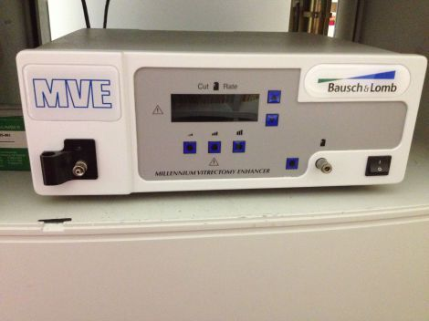
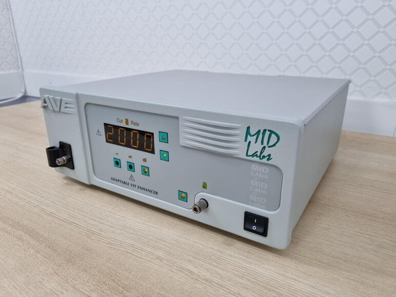
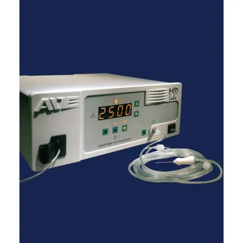
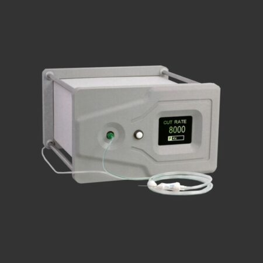
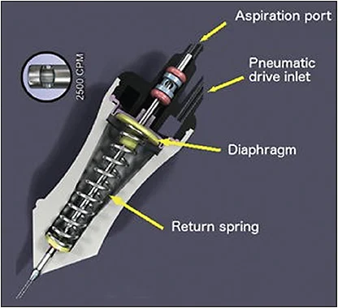
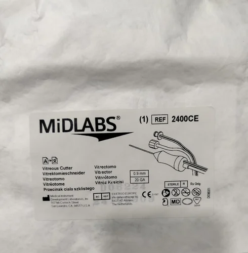
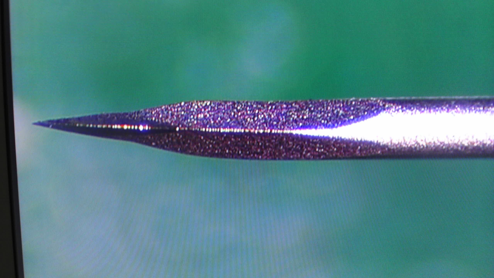
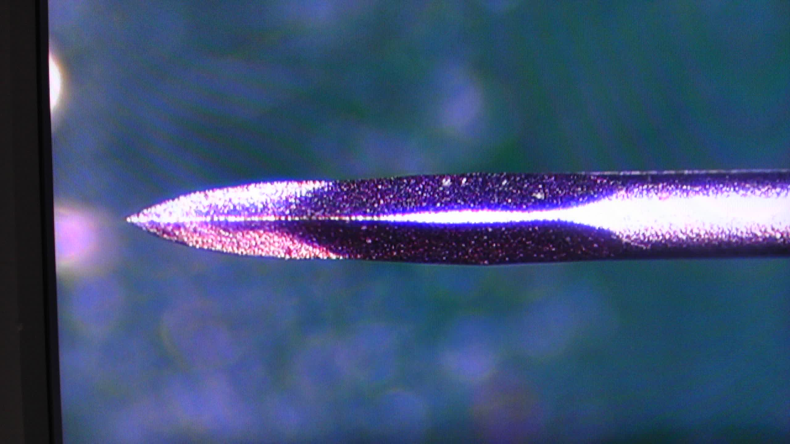
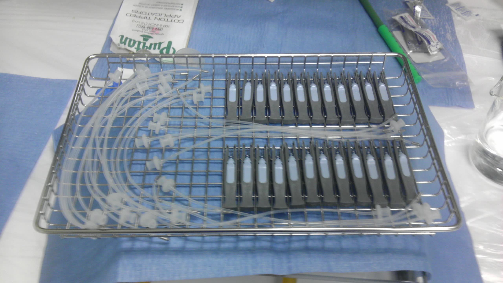
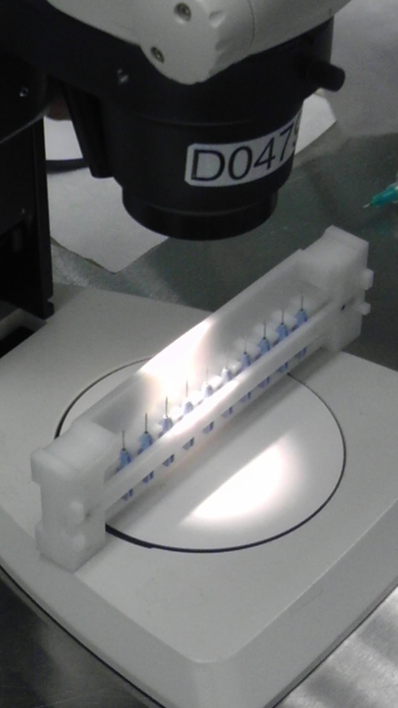
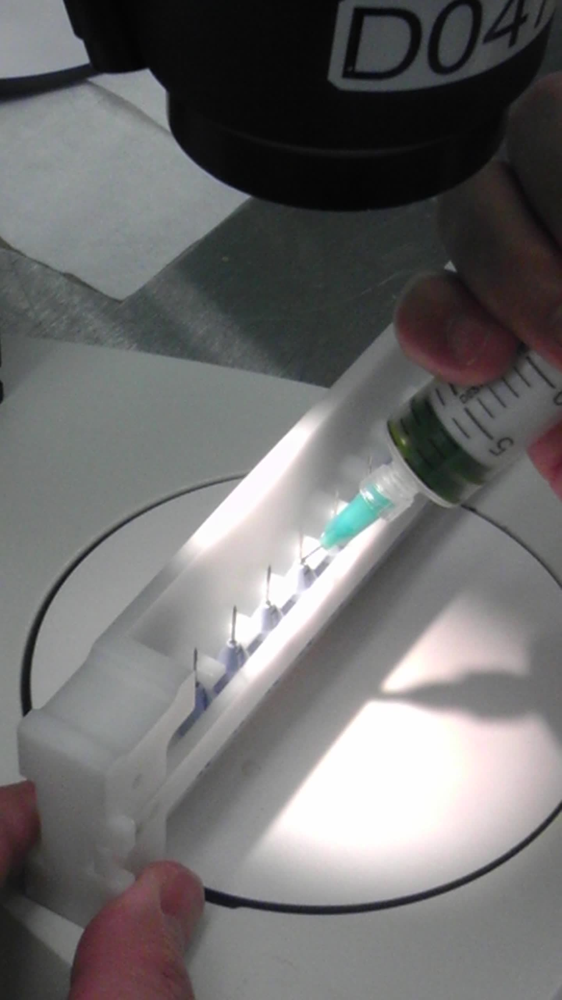
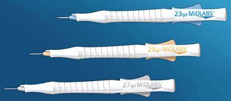